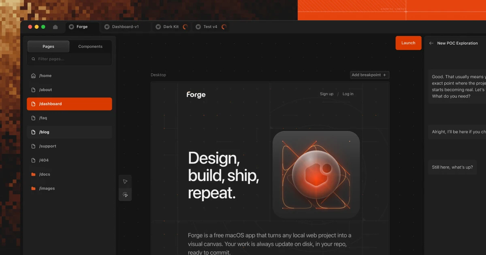

Forge
- Лендинг
- Сервисы и приложения
- Инструменты разработчика
- Разработчикам
- Дизайнерам
- Агентствам
- Утилитарный техно
- Минимализм
- Тёмная тема
- Нейтральный фон
- Скроллителлинг
- Липкие секции
- Микроанимации
- React
- three.js
- Vite
- Английский язык
- Действующий сайт

Что это
Лендинг Forge — визуального слоя для кодирующих агентов от UI8. Вместо обещаний показан сам рабочий интерфейс: окно проекта, список страниц, canvas с макетом и чат с агентом. Forge собирает компоненты и страницы, отдаёт их в проект на диске и позволяет переиспользовать в ChatGPT и Claude; страница листается по кругу. Лендинг нового веб-конструктора от платформы UI8, заявленного как альтернатива Framer, но с полным владением: сайт и код остаются у автора, без привязки к платформе. Инструмент будет работать с агентами Codex, Claude, Cursor и Gemini. Примечательный приём — зацикленный скролл, из-за которого сайт можно листать по кругу вечно.
Что смотреть в первую очередь
Смотреть окно Forge с /dashboard и оранжевой сферой, затем оценить зацикленный скролл: страница возвращается к началу.
Приёмы
- Скроллителлинг
- Липкие секции
- Микроанимации
Интересные факты
- Первый экран выглядит как окно настольного приложения: тёмный title bar, вкладки Forge, Dashboard-v1, Dark kit и Test v4.
- Слева Pages и Components, выбран /dashboard; справа — чат New POC Exploration, в центре — тёмный макет «Design, build, ship, repeat.» с оранжевой сферой.
- Forge описывается как визуальный слой для Claude Code, Codex и Cursor: компоненты и инструменты собираются вместе с агентами.
- Проект остаётся на диске и в репозитории, а готовые компоненты можно переиспользовать в ChatGPT и Claude.
- Страница листается по кругу: после последнего блока скролл возвращает к началу, поэтому лендинг можно смотреть бесконечно.
- В разметке подключены React, Three.js и Vite-ассеты; сам интерфейс показан как настоящий продукт, а не как набор скриншотов.
Паспорт
- Домен
- ui8.ai
- Тип сайта
- Лендинг
- Категории
- Сервисы и приложения
- Подкатегории
- Инструменты разработчика
- Для кого
- Разработчикам, Дизайнерам, Агентствам
- Стиль
- Утилитарный техно, Минимализм
- Язык
- Английский
- Страна
- не указано
- Автор
- UI8
- Год
- не указано
- Добавлен в коллекцию
- 21.11.2026
Палитра
-
#1C1C1C— 85% кадра -
#E2420C— 4% кадра -
#423B3A— 4% кадра -
#5D2B1A— 2% кадра -
#813F1F— 1% кадра
- Режим
- Тёмная
- Цвет фона
- Нейтральный
Технологии
- React
- Three.js
- Vite